There are 25 questions in this test. 20 is a passing grade. 23 is an A.
You have one hour (60 minutes) to take the test. That gives you a little over
2 minutes for each question.
-
What is the character on this sign?
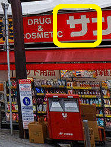
- KE
- SA
- RI
- WA
-
How can you show respect for the building you enter in Japan?
- Bow twice
- Remove your shoes
- Wear your hakama
- Let the air and sunshine in
-
How do you write "TRAIN STATION" in Japanese?
IMA
- キケ
- いほ
- イマ
- りま
-
What is the biggest challenge for Japanese farmers?
- Extremely cold weather
- Deep swampy land
- Lots of wet weather
- Steep rocky land
-
What is the character on this sign?
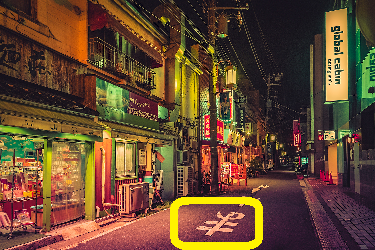
- HO
- HA
- MA
- KI
-
What is Feng Shui?
- A fancy coat for men and women
- A school with a tree inside it
- The eastern coastal swamps
- Room for nature within buildings
-
How do you write "FLOAT TOY" in Japanese?
UKIWA
- うきね
- うきろ
- クキウ
- ウキワ
-
What is the character on this sign?
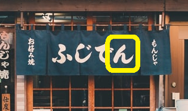
- NI
- HA
- N0
- KU
-
What are the characters on this sign?
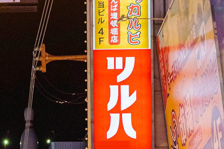
- TUSORI
- SIHASO
- TURUHA
- SIRISA
-
How do you write "STAR" in Japanese?
HOSI
- はし
- ハツ
- まし
- ホシ
-
What material do Japanese primarily use for traditional buildings?
- Metal
- Wood
- Glass
- Paper
-
What is the character on this sign?
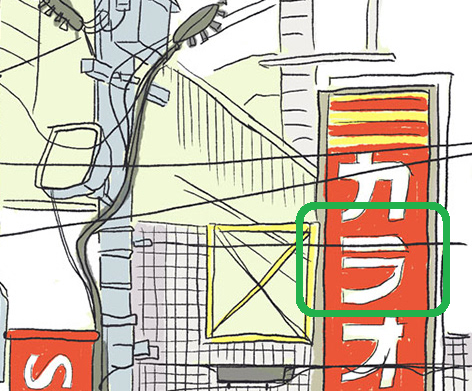
- TU
- WA
- 0U
- 0I
-
How do you write "HORSE" in Japanese?
UMA
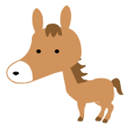
- ウケ
- つま
- ウマ
- ワマ
-
What is the character on this sign?
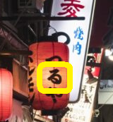
- RU
- NE
- RO
- WA
-
What is the character on this sign?
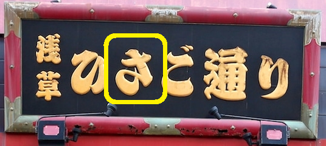
- KI
- HA
- KE
- SA
-
How do you write "POLICE" in Japanese?
KEISATU
- ケイサツ
- こイさし
- マりせつ
- まうさつ
-
Which US State is most like Japan's climate?
- Maryland
- Minnesota
- Mississippi
- Maine
-
How do you write "TOP" in Japanese?
KOMA
- ロケ
- こほ
- コマ
- にま
-
What is going on here? What are the blue shoes?
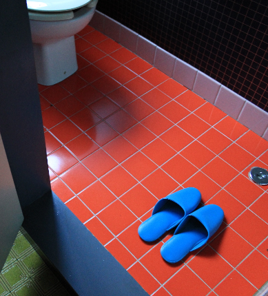
- Those are boy shoes
- The floor is slippery
- Those are bath and shower shoes
- Someone washed their outside shoes
-
What is the character on this sign?
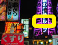
- SA
- KE
- RU
- RO
-
How do you write "GREEN ONION" in Japanese?
NEKI
- ねま
- ねき
- るさ
- わさ
-
What is special about the red shoes?
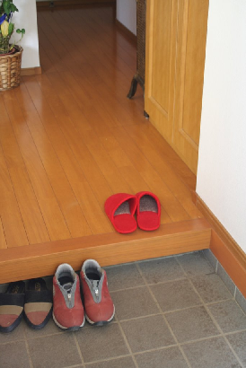
- Those are socks, not shoes
- Those shoes are for inside the house
- Those shoes are part of a kimono
- Those shoes for girls
-
What is going on here? Why is the land flooded?
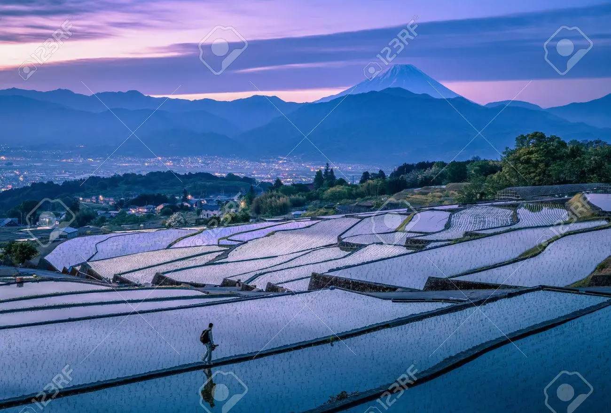
- This is a periodic problem in Japan
- This is how they grow rice
- The farmers are draining the swamp
- This is how they grow fish
-
How do you write "DICE" in Japanese?
SAIKORO
- リイコハ
- さいころ
- サイロル
- さソにる
-
Where did Japan get this kind of wooden temple architecture?
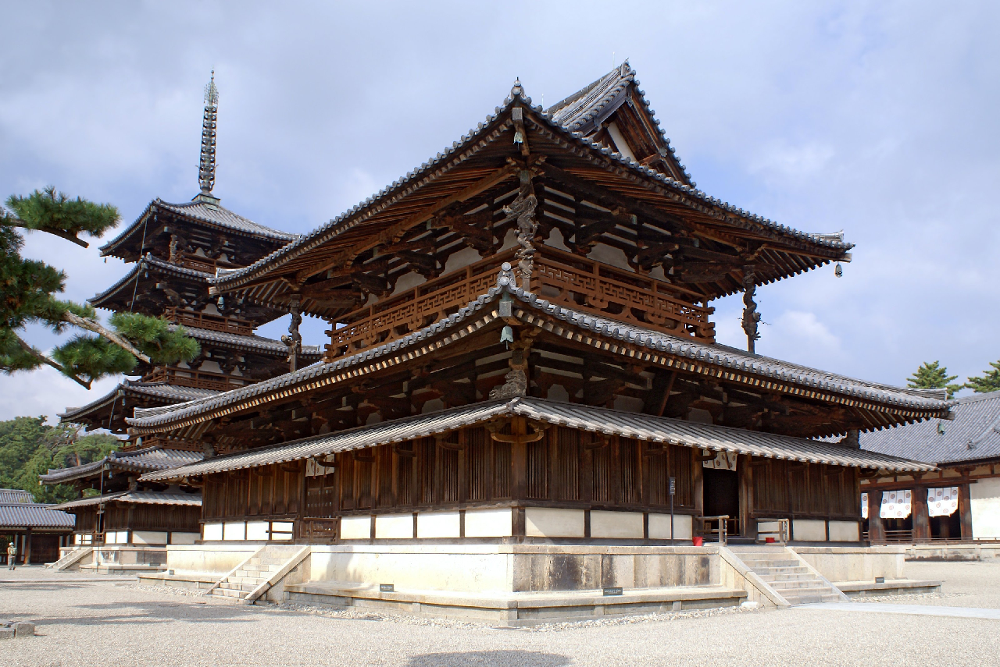
- America
- Korea
- China
- Vietnam